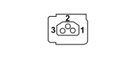

K097D PARKING SENSORS (REAR BUMPER)
- Path
- Electrical equipment > 3 CONNECTORS > K SENSORS AND SENDER UNITS > K097 PARKING SENSORS > K097D PARKING SENSORS (REAR BUMPER)
- Kind
- connector pinout (pin -> wire colour -> other end)
- Applies to
- all engines; all production periods
- Interactive page
- https://sloeber94.github.io/elrnDB-fPnd/en/#/169003364
Applies to: all engines; all production periods

Wiring | Colour |
|---|---|
- |
Pin | Cable | Destination | |||
|---|---|---|---|---|---|
Sec.. | Colour | Node | Connect. | Pin | |
1 | 0,35 | HM (grey with brown stripe) | 4 | ||
2 | 0,35 | AN (light blue with black stripe) | X | 6 | |
2 | |||||
2 | |||||
2 | |||||
3 | 0,35 | BV (white with green stripe) | X | 5 | |
3 | |||||
3 | |||||
3 | |||||
Topics linked from this page (5)
- 29 REAR BUMPER
- D089 PARKING SENSOR COUPLING
- K097A PARKING SENSORS (REAR BUMPER)
- K097B PARKING SENSORS (REAR BUMPER)
- K097C PARKING SENSORS (REAR BUMPER)